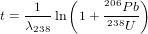

Chapter 12
Matlab practicals
Matlab is a mathematical scripting language that is both powerful
and easy to use. The full version of the software is very expensive
but a reasonably complete student version can be purchased for
£55 + VAT from http://mathworks.com. Alternatively, Octave is
an open source clone of Matlab that can be downloaded for free
from
http://www.gnu.org/software/octave.
12.1 Introduction to Matlab
This exercise will present a brief tutorial of the most basic functionality in
Matlab, which will cover most commands you will need for the subsequent
computer practicals.
% Anything following a percent symbol is a
% comment and is ignored by Matlab. It is
% considered good practice to document your
% code with lots of comments, as will be
% done for this tutorial.
% Ending a line with a semi-colon
% suppresses output to the console:
'be loud'
'stay quiet';
% Matlab can be used as a fancy calculator:
1 + 1
sqrt(2)
exp(log(10))
% Intermediate values can be stored in variables:
foo = 2;
bar = 4;
foo = foo*bar;
foo
% Data can be entered as vectors:
x = [0 2 4 6 8 10]
% or using shorthand syntax:
y = 0:2:10
% Define a matrix
z = [1 2 3
4 5 6
7 8 9];
% Accessing one or more elements
% from a matrix or vector:
x(3)
y(1:3)
z(1:2,2:3)
% Attention: '*', '/' and '^' symbols
% are reserved for matrix operations:
a = [1 1 1] % row vector
b = [1;1;1] % column vector
a*b
% Use '.*', './' and '.^' for
% element-wise operations:
a.*a
% Transpose of a matrix:
z'
% In addition to Matlab's built-in operators
% and functions, you can also define your own:
function out = cube(in)
out = in^3;
end
% After saving the code in a file named cube.m,
% you can then use this function as follows:
c3 = cube(3)
% A useful feature of Matlab that is missing from
% most other programming languages is the ability
% to accommodate several output parameters:
function [m,s] = basicStats(dat)
m = mean(dat); % mean
s = std(dat); % standard deviation
end
% create a row vector of 10 random numbers
randnum = rand(1,10);
% use our new function
[m,s] = basicStats(randnum)
% Conditional statement:
function coinToss
% 'rand' produces numbers between 0 and 1
if (rand > 0.5)
% display a message to the console
disp('head')
else
disp('tail')
end
end
% For loop:
for i=1:10,
coinToss
end
% List all the variables in the current workspace:
who
whos
% Remove some or all variables
% from the current workspace:
clear m,s
who
clear all
who
% Copy the 'coinToss' function into a text file
% named 'coinToss.m' and save it in the current
% directory. You can then load the contents of
% the file by simply typing its name without
% the '.m' extension:
coinToss
% Basic file management is done with UNIX commands:
pwd % pass the working directory
cd .. % move up one directory
ls % list all files in the current directory
% Use the above commands to navigate to the
% directory containing the 'population.csv' file.
% To view the contents of the file:
type('population.csv')
% To read the actual population dataset
% into memory, ignoring the header:
pop = csvread('population.csv',1,0);
% To access the help files of the 'csvread'
% function and find out the meaning of the
% various input arguments:
doc csvread
% Incidentally, the 'type' function can also
% be used to view the Matlab code of built-in
% and other functions:
type('mean')
% Plot the first column of 'pop'
% against the second one:
plot(pop(:,1),pop(:,2),'-k')
title("World population through time")
xlabel('year')
ylabel('population [millions]')
% Get the number of rows and columns of the dataset:
[nc,nr] = size(pop);
% Extract the data from 1965 until 2014:
years = pop(:,1);
pop65 = pop(years>=1965,:);
% Fit a linear model through these data:
x = pop65(:,1);
y = pop65(:,2);
[fit,S] = polyfit(x,y,1);
% We won't use S today but we will in Practical 4!
% Create a new figure window
figure(2)
plot(x,y,'ok')
hold on
ypred = fit(1)*x+fit(2);
plot(x,ypred,'-k')
% Close all plot windows:
close all;
And that concludes this short tutorial. Now try to calculate a Rb-Sr age
by regressing an isochron through the following data (recall that λ87 =
0.0000142 Myr−1.
| 87Sr/86Sr | 0.707 | 0.736 | 0.771 | 0.757 | 0.785 |
| 87Rb/86Sr | 1.00 | 5.00 | 10.00 | 8.00 | 12.00 |
12.2 U-Th-Pb data reduction
You are supplied with two data files that were produced by the quadrupole
laser ablation ICP-MS system at UCL’s London Geochronology Centre. At
the time of the analysis, this instrument could not resolve 204Pb from the
isobaric interference at 204Hg. Therefore, it is not possible to apply a
common lead correction as explained in Section 5. However, this does not
cause any major issues to us because:
- The mineral analysed is zircon, which is a mineral that
incorporates very little common Pb in its crystal structure during
crystallisation.
- The ages are sufficiently old for the radiogenic Pb to dominate
the common Pb component by orders of magnitude.
In this exercise, we will use standard-sample bracketing (Section 3.3) to
process some raw mass spectrometer data in Matlab:
- Load the input files 91500.csv (sample) and GJ1.csv (standard)
into Matlab.
- Plot the 238U signal against time.
- Given that GJ-1 has a known age of 600.3874 Ma, what are its
expected 206Pb/238U, 207Pb/235U and 208Pb/232Th ratios?
- Compare these values with the measured ratios, computed as the
arithmetic mean signal. Is there a significant difference between
the measured and the expected ratios? What could be causing
this?
- Calculate a correction factor by dividing the measured GJ-1 ratios
by the expected values.
- Calculate the measured isotopic ratios for sample 91500.
- Apply the correction factor calculated in step 5 to these
measurements.
- What is the age of 91500?
- Can you plot the results on a Wetherill concordia diagram?
12.3 40Ar/39Ar data reduction
In this exercise, we will use Matlab to reduce some synthetic 40Ar/39Ar
data. You are provided with three input files:
- smpl.csv: 36Ar, 39Ar and 40Ar as a function of time (t) for the
sample.
- stnd.csv: the same data for the standard, which is a Fish Canyon
sanidine with a conventional K-Ar age of 27.8 Ma.
- blnk.csv: a ‘blank’ run, i.e. a measurement of the background
levels of Argon present in the mass spectrometer in the absence
of a sample.
To perform the data reduction, please follow the following steps:
- Load the three input files.
- Plot the 40Ar signal of the sample against time. Do the same for
the 36Ar signal in the blank. What’s the difference?
- Perform a linear regression of the 36Ar, 39Ar and 40Ar signals
through time and determine the intercept at t=0.
- Subtract the blank signals from the sample and standard signals.
- Apply an atmospheric correction assuming that all 36Ar has an
atmospheric origin.
- Calculate the J-value of the standard.
- Calculate the age of the sample.
12.4 Error propagation
This exercise will build on the results from the previous two practicals.
- Plot the 206Pb/238U-ratios of the sample against those of the
standard (data from Section 12.2). Verify that the covariance
between the two can safely be neglected.
- Calculate the standard errors of the mean 206Pb/238U signal
ratios for the sample (91500) and the standard (GJ-1), using
Matlab’s mean and std functions.
- Propagate the analytical uncertainties of the U-Pb age, ignoring
the covariance terms. Recall that

If you want you can use the simplifying approximation that
ln(1+X) ≈ X if X ≪ 1 (this assumption may not be correct for
the 207Pb/235U-age).
- Compute the analytical uncertainties associated with the linear
extrapolation of the argon signals of the sample and the standard
in Section 12.3. All the relevant information is provided in the
output of the polyfit function:
help(polyfit)
...
[P,S] = POLYFIT(X,Y,N) returns the polynomial
coefficients P and a structure S for use with
POLYVAL to obtain error estimates for predictions.
S contains fields for the triangular factor (R)
from a QR decomposition of the Vandermonde matrix
of X, the degrees of freedom (df), and the norm
of the residuals (normr). If the data Y are
random, an estimate of the covariance matrix
of P is (Rinv*Rinv')*normr^2/df, where Rinv
is the inverse of R.
Based on these instructions, I have written the following function to
calculate the standard errors of the fitting parameters from the second
output parameter of the polyfit function:
function se = S2se(S)
covmat = (inv(S.R)*inv(S.R'))*S.normr^2/S.df;
se = sqrt(diag(covmat));
end
- Use these error estimates to propagate the analytical uncertainty of
the J-value and the sample age. Again you can use the linear
approximation to the age equation mentioned in point 3.
12.5 Fission tracks
In this exercise, you will use your Matlab programming skills to calculate
some fission track ages. You are given the following datasets:
- DUR.csv: a table with two columns listing the number of
spontaneous tracks Ns and induced tracks Ni counted in 25
grains of an apatite age standard (t = 31.4 Ma) from Durango,
Mexico. Note that these pairs of tracks were counted over the
same area, so that ρs∕ρi = Ns∕Ni in Equation 7.9.
- MD.csv: a similar table for an apatite sample from Mount
Dromedary, Australia.
You will need to:
- Rewrite Equation 7.9 in terms of the ζ calibration factor and
use this new formula to calculate the ζ factor for each single
grain analysis of the Durango age standard. Use a dosimeter track
density of ρD = 300,000 cm−2.
- Use the mean of these ζ factors to calculate the age of the Mount
Dromedary sample (i.e., the single grain ages and their mean).
- Propagate the analytical uncertainties for each of those single
grain ages, using the fact that fission track counts (N, say) follow
a Poisson distribution for which it is true that:

To simplify the calculations, you can also use the following
approximation:

- How does the single grain age precision of the fission track method
compare to the U-Pb and 40Ar/39Ar age uncertainties in Sections
12.2 and 12.3? Also compare with the standard deviation and
standard error of the mean age of Mount Dromedary apatite.